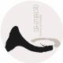
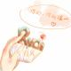

热门播客
FM193491 程一电台
DJ程一
节目 665
播放量 3亿7677万
FM233233 笑不出来
闪闪、徐好玩
节目 223
播放量 1亿659万
FM25681 凯叔讲故事
光头王凯
节目 1382
播放量 8693万
FM67590 DJ陈末
DJ陈末
节目 327
播放量 5373万
FM353471 十点读书
十点读书官方播客
节目 642
播放量 6538万
FM681575 一个人听✨
蕊希Erin
节目 223
播放量 2378万
FM18084 昨天的你的现在的未来
背着吉他的蝙蝠女侠
节目 358
播放量 3亿829万
FM3219004 艾辰欧巴
艾辰、
节目 5
播放量 10.5万
FM3172207 情感频道精选
情感频道官方播客
节目 15
播放量 65864
FM1455354 园长妈妈的 睡前故事
园长妈妈的 睡前故事
节目 625
播放量 3262万
FM249394 给同样失眠的你。
凌峰。
节目 247
播放量 6504万
FM1289380 郭德纲于谦精选相声
幽默学
节目 3182
播放量 2327万
FM1686234 365读书
365读书
节目 486
播放量 614.4万
FM187702 苏木的声音纪行
NJ苏木
节目 164
播放量 1817万
FM18459 修炼爱情🎈异地恋
NJ璐璐
节目 514
播放量 4633万
FM13461 糖蒜广播
糖蒜广播
节目 1570
播放量 6189万
FM70098 行走的风景
饶雪漫
节目 245
播放量 8004万
FM415593 我可能•不会爱你
睡不醒的 莹莹主播
节目 228
播放量 1亿3260万
FM539382 民谣在路上Folk
十三月文化
节目 356
播放量 1234万
FM1014091 _向北
主播北泰
节目 253
播放量 977.9万
FM1967306 小猪佩奇动画中文录音
Roxanne丶
节目 126
播放量 375.4万
FM1244717 嗨，一千零一夜
NY杨宇（万声娱乐）
节目 343
播放量 1203万
FM14275 大内密谈
大内密谈
节目 421
播放量 3070万
FM535519 孤独患者的电台
NJ灰灰
节目 128
播放量 535.6万
FM1526118 -伦桑家养录音组-
-伦桑家养录音组-
节目 1077
播放量 257.3万
FM30562 儿童睡前精选故事
小鱼姐姐
节目 475
播放量 2605万
FM370918 花落世界♪每日轻音乐
辰星铃
节目 438
播放量 764.1万
FM1251230 体坛先锋网络电台版
体坛先锋
节目 1593
播放量 1391万
FM1464597 满汉全席的录音
Dear_Baekhyun
节目 4569
播放量 1626万
FM2413514 傲娇少年，Vk
傲娇少年Vk，
节目 27
播放量 56350
优选播客
FM813253 【城市夜未央】青茫
王志谦
节目 53
播放量 147.8万
FM250837 朝九·晚五
姚小明『听说Radio』丽
节目 93
播放量 107.8万
FM1244717 嗨，一千零一夜
NY杨宇（万声娱乐）
节目 343
播放量 1203万
FM103686 当我们混在欧洲
要没时间了的孙悟空
节目 263
播放量 227.6万
FM176666 荔枝班主任
荔枝FM播客学院-176666
节目 86
播放量 15.3万
FM178674 健康减肥 keep fit
蜜桃planet
节目 165
播放量 310.7万
FM988518 英文精选·角落唱片店
郑夕夕
节目 86
播放量 1405万
FM1368969 壹点灵心理电台
壹点灵
节目 253
播放量 635.5万
FM797198 天海无贝的听音筒
天海无贝
节目 97
播放量 257.8万

FM1645875 民谣与诗FM
易小婉
节目 96
播放量 311.8万
FM353363 我是女主播™
NJ伊蔓
节目 97
播放量 262.7万
FM67194 韩剧集中营～
小蜜蜂nomo
节目 96
播放量 370.6万
FM79929 看电影，听音乐
像羽毛一样的轻
节目 143
播放量 451.5万
FM845754 风吹过的你的心
南锣鼓巷的一只猫
节目 151
播放量 31.3万
FM876169 宝贝树绘本故事屋
Stone姐姐
节目 66
播放量 41.2万
FM922165 帅叔电台
帅叔™
节目 42
播放量 59796
FM413301 洋槐胡同48号（87故事台）
老刺猬！
节目 1926
播放量 761.4万
FM1246138 英语早读
翩翩老师
节目 107
播放量 56.2万
FM1904263 每周音乐不断
🎙杨帅
节目 107
播放量 138.5万
FM502813 如果我变成一首歌
吃药先森
节目 133
播放量 1367万
FM34184 Tea for One/孤品兆赫
爵士民谣布鲁斯摇滚
节目 179
播放量 182.5万
FM13603 给你的情书❤💌
傻蜘蛛先生
节目 44
播放量 507.6万
FM856493 DJ 康定一把火 电音社
Dj.ayi
节目 371
播放量 429.2万
FM1324216 麦酱的异地恋💫
麦酱M。
节目 63
播放量 61万
FM1446941 故事田田
故事田田
节目 143
播放量 89.2万
FM1569201 师兄师姐说职场
师兄师姐说职场
节目 53
播放量 35万
FM1618443 红烧肉文学夜诵
闷热的红烧肉
节目 43
播放量 12.6万
FM1564106 雅思微电台
雅思女神 Alex
节目 162
播放量 67.8万
FM1431810 不一样的好歌
NJ洋葱
节目 63
播放量 79.4万
FM451731 音飨宴
音飨宴电台
节目 169
播放量 99.5万
新晋榜
FM3886736 源哥会让你闭嘴惊艳
丸圆
节目 3
播放量 8898
FM2849683 错过世界，遇见你
逸辰梓💫村儿花✨
节目 9
播放量 1169
FM3955349 争气鸡的战斗叽
争气🐔的战斗叽
节目 1
播放量 119
FM2495453 七年的少年
七年👑🌵
节目 6
播放量 646
FM3463973 瑾凉。『魅音FM』
瑾凉。Y
节目 4
播放量 3580
FM3458683 苏琬琬给你唱歌
苏琬
节目 2
播放量 3536
FM3172207 情感频道精选
情感频道官方播客
节目 15
播放量 65864

FM3877035 Ryoi
秋篠
节目 3
播放量 964
FM2082940 一周CP
一周CP
节目 6
播放量 1333
FM3544274 Mr.D的时光
Mr.D🌛
节目 14
播放量 1646
FM3656284 ∥Sky〃天空。
∥Sky〃天空。
节目 1
播放量 323
FM2339718 核电站
妖仙『初见』
节目 2
播放量 2313
FM3735163 Ladymo
Ladymo
节目 3
播放量 33
FM3503742 汪广辉18210275606
汪广辉-于老师18210275606
节目 6
播放量 135
FM3539765 单先生
单先生🚀
节目 4
播放量 499
FM3187748 乐比呦呦
乐比呦呦
节目 5
播放量 941
FM3469061 隔壁老师
小虫几么么
节目 4
播放量 3010
FM3005203 一夜星辰
星辰 🌖
节目 8
播放量 20539
FM2062417 许英明
许英明
节目 1
播放量 137
FM3246162 短腿毛球
短腿毛球（成都FM）
节目 10
播放量 12315
FM2784294 Yeah虚拟编辑站
Yeah虚拟编辑站
节目 13
播放量 2742
FM3080165 一阵感情风
海镇『听说Radio』聃～D
节目 2
播放量 1407
FM3015173 李实
李实🍄
节目 4
播放量 657
FM3911493 骨头CC
骨头哒哒哒哒哒哒哒哒
节目 6
播放量 1096
FM2739026 优势养育我的生涯规划
循优说优势教育
节目 29
播放量 2907
FM3220753 Nj 陌离「聚聲FM」
Nj 陌离「聚聲FM」
节目 4
播放量 828
FM2328497 Tom's Family
Tom's Family
节目 14
播放量 939
FM3940291 晨枫✨星光传媒💫
晨枫✨星光传媒💫
节目 4
播放量 184
FM3902296 巷子里的猫九
巷子里的猫九
节目 5
播放量 3470
FM3790415 死神。
贱人镜【♞會云娱乐】
节目 8
播放量 3138